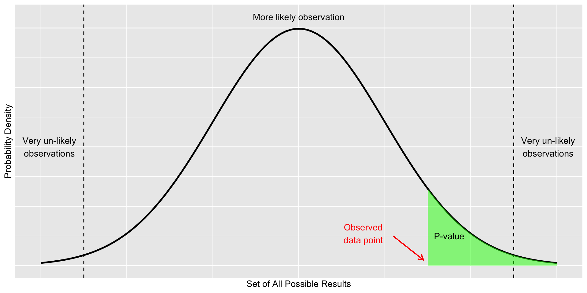

graph TD A[Statistics] --> B[Descriptive] A --> C[Inferential] A --> D[Bayesian] A --> E[Statistical learning] B --> F[Central tendency] B --> G[Distribution] B --> H[Plot] C --> I[T-test] C --> J[ANOVA] E --> K[AI] E --> L[NN]
Introduction to Statistical Inference
Research Methodology Biopharmaceutical Science
Natapol Pornputtapong, PhD
Chulalongkorn University
13 Mar 2026
PPDAC: A for Analysis
Statistical testing
Statistics 1
discipline that concerns the collection, organization, analysis, interpretation and presentation of data
Statistic tools Family
Drug testing
- 2 new pain killer, test in 10 persons that have pain.
- A: 8 of 10 get better.
- B: 9 of 10 get better.
- 2 new pain killer, test in 100 persons that have pain.
- A: 70 of 100 get better.
- B: 79 of 100 get better.
Statistical inference
Observe
Sample
——>
Infer
Population
Hypothesis testing: statistical inference
- Convert the research hypothesis to null hypothesis and try to disprove. The decide which test & tails to be used.
- decide on a significance level – the probability with which we are prepared to make a wrong decision if the null hypothesis is true.
- Experimental design & do data collection
- Perform requirement check then Calculate p-value
- Compare p-value with a significance level then end up either accepting or rejecting the null hypothesis.
- Interpretation
State the hypothesis
- Parameters
- mean (\mu)
- standard variation (\sigma)
- distribution
- Alternative relationship
- not equal (\neq) - two tail
- greater than (\gt) - one tail
- lower than (\lt) - one tail
Hypotheses
| Null (not-sig: true) | Alternative (sig: true) |
|---|---|
| \mu = 15 | \mu \neq 15 |
| \mu \leq 15 | \mu \gt 15 |
| \mu_1 = \mu_2 | \mu_1 \neq \mu_2 |
| \mu_1 \geq \mu_2 | \mu_1 \lt \mu_2 |
| \mu_1 = \mu_2 = \mu_3 ... | \mu_1 \neq \mu_2, \mu_1 \neq \mu_3 ... |
Choose the test: Parametric and non-parametric
Parametric
- test based on parameterized distributions
- T-Test
- ANOVA
- More strictness
- Requirement check
Non parametric
- not based on parameterized distributions
- Mann-Whitney
- Kruskal-Wallis
- Less strictness
- No requirement
Decide the significant level
| null hypothesis is true | null hypothesis is false | |
|---|---|---|
| accept null hypothesis | Good | Type II (\beta) error |
| reject null hypothesis | Type I (\alpha) error | Good |
Choosing the test
- Choosing the test based on the hypothesis
- Decide on the significant level & collect the data
- Choose the parametric first
- Checking the assumption of the test
- Calculate p-value, confidence limit
- Accept or reject null hypothesis
P-Value

Wrong interpretation of P-Value
When the same hypothesis is tested in different studies; if P of Drug ‘A’ is smaller than drug ‘B’, then drug ‘A’ is more effective than drug ‘b’.
choosing Statistic Testing
- type of parameter: mean, variance, distribution, proportion
- number of sample group: one, two, more
- type of variable: focus on continuous
- number of independent variable: focus on one
- number of dependent variable: focus on one
- parametric vs non parametric
Testing of Mean 1 sample
| normal ? | extra requirement | test to use |
|---|---|---|
| yes | N/A | one sample T-Test of mean |
| no | N/A | Mann-Whitney U |
Testing of Mean 2 samples
| normal ? | extra requirement | test to use |
|---|---|---|
| yes | sample pair | paired T-Test of mean |
| no | sample pair | Wilcoxon signed rank test |
| yes | equal variance | two sample T-Test of mean of equal variance |
| yes | nonequal variance | two sample T-Test of mean of non equal variance |
| no | N/A | Wilcoxon rank-sum test |
Testing of Mean more samples
| normal ? | extra requirement | test to use |
|---|---|---|
| yes | N/A | One-Way ANOVA |
| no | N/A | Kruskal-Wallis test |
Testing of Variance
- Bartlett Test of Homogeneity of Variances
Testing of Distribution
- Shapiro-Wilk test of normality
References
- https://sparkbyexamples.com/r-programming/select-rows-in-r/
- https://4va.github.io/biodatasci/
- https://bioconnector.github.io/